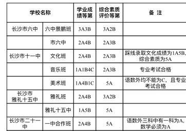

18日，长沙市教育局中招办发布长沙城区第二批普高学校录取线。据悉，该批次普通高中招生学校为：长沙市第六中学、长沙市第十一中学（含音乐班和美术班）、长沙市雅礼第十五中学、长沙市第二十一中学、长沙铁路第一中学（含美术班）、长沙市雷锋学校（含美术班和音乐班）、湖南省地质中学、长沙外国语学校、长郡梅溪湖中学、师大附中梅溪湖中学、周南梅溪湖中学、长郡滨江中学、雅礼洋湖实验中学、麓山滨江实验学校、长郡湘府中学、雅礼实验中学、望城区第一中学、长郡斑马湖中学等。
本批次普高学校备受关注的梅溪湖畔三所学校——长郡梅溪湖中学、师大附中梅溪湖中学、周南梅溪湖中学录取线学业水平考试成绩要求均为3A3B，但在综合素质评价等级和语数外三科的等级要求上略有不同。此外，长郡滨江中学、雅礼洋湖中学以及首次招收高中生的雅礼实验中学要求的学业成绩等级均为3A3B。
值得一提的是，雅礼实验中学从初中开始办高中，在近年来的长沙教育中，尚属首次。该校相关负责人介绍，建校8年来，学校办学质量稳步上升，连续五届初三毕业班6A、10A全优人数和比例、毕业合格率均在长沙市前列，先后获得“中国初中女子篮球联赛总冠军”“湖南省体育传统项目学校”“长沙市文明标兵校园”等多种荣誉称号。从一所纯初中学校升格为完全中学，家长们最关心的是“师资力量”如何保证。对此，相关负责人表示，在高中办学方面，学校有四条渠道保证师资力量：一是学校自办学以来从各地中学招聘了一大批优秀教师；二是招聘了一批来自“双一流”大学的优秀应届毕业生，全校研究生以上学历教师占教师总数58%，98%的教师持有高中教师资格证；三是学校近三年输送了各科优秀教师到雅礼中学任教，作为开办高中的师资准备；四是已面向全省招聘正高级、高级教师和学科带头人等。
各高中录取线如何划定？据悉，根据《关于做好2020年长沙市城区高中阶段招生工作的通知》要求，划线时依据学生的初中学业水平考试成绩、综合素质评价结果以及享受政策性优惠情况，结合考生志愿按照以下规则依次择优录取：
①比较初中学业水平考试成绩等级。
②比较综合素质评价等级。
③比较享受优惠政策的情况。
④比较书面考试语文、数学、英语三科的总等级组合。
⑤按照顺序依次比较书面考试语文、数学、英语三科的单科等级。
 关注湖南文化产业网微信公众号
关注湖南文化产业网微信公众号湖南文化产业网(www.hnci.net.cn)版权所有 (c) All Rights Reserved.
未经湖南文化产业网书面特别授权，请勿转载或建立镜像